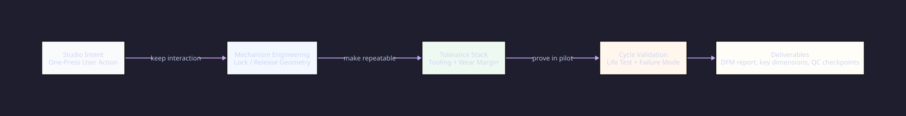
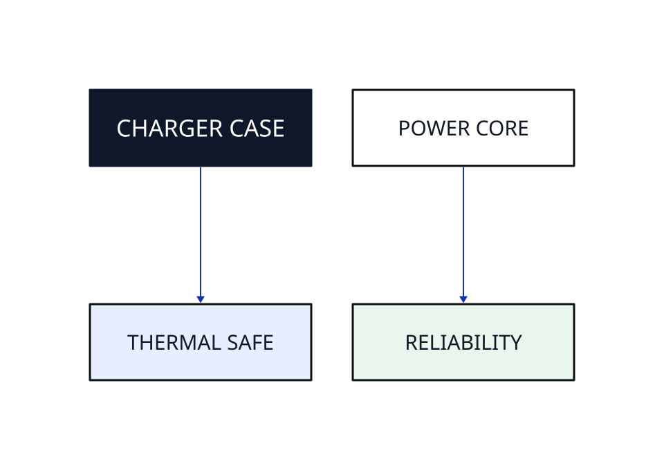
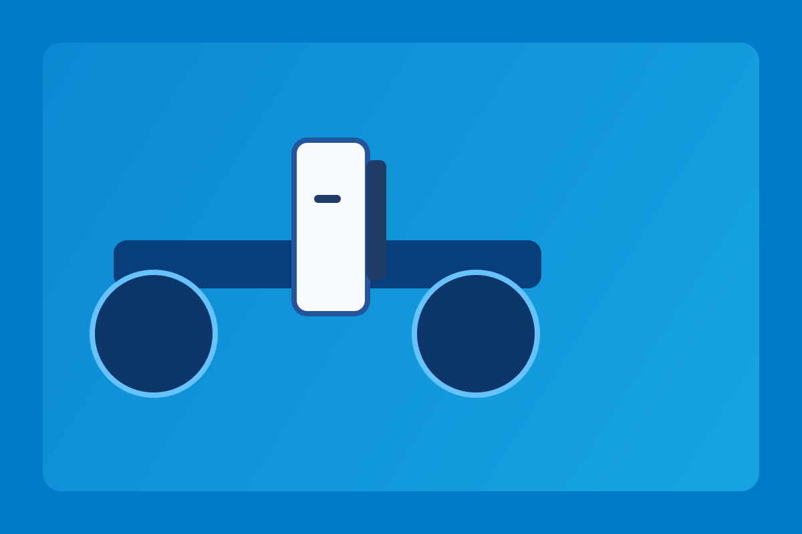
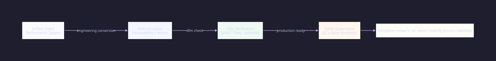
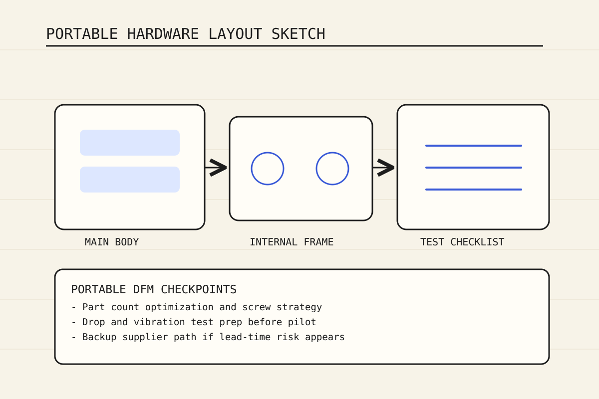

Filter Mechanism Conversion
Translated concept interactions into a durable mechanism stack with repeatable assembly behavior.
Execution Cases
These examples focus on engineering conversion, validation loops, and manufacturing transfer outcomes rather than front-end design work.

Featured Programs

Translated concept interactions into a durable mechanism stack with repeatable assembly behavior.

Resolved structure, thermal, and production constraints while preserving the studio-approved language.

Built iterative prototype cycles to de-risk performance and manufacturing repeatability before pilot.

Converted early concept geometry into manufacturable part architecture and serviceable assembly logic.

Improved weight-performance balance and clarified process controls for stable pilot and transfer.

Rebuilt a legacy configuration into a modernized engineering package ready for certification planning.
Execution Pattern
Phase A
Check intent, constraints, and feasibility risks before engineering expansion starts.
Phase B
Convert concept package into manufacturable architecture and process assumptions.
Phase C
Execute EVT/DVT checkpoints and close issues with tracked corrective actions.
Phase D
Release complete production package with QC gates and escalation structure.
Operational Outcomes
Share your studio files and delivery constraints. We will map the right engineering plan.